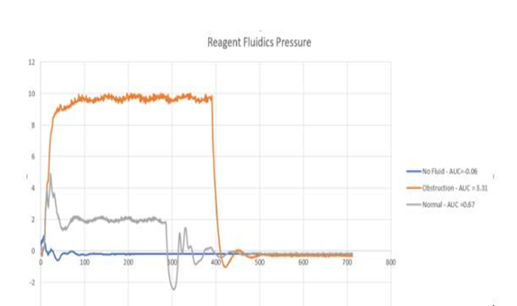

Be sure the tubing to the low-resolution or high-resolution syringe, or the cables to the pressure sensor or from the pressure sensor to the tip, are not kinked.
Troubleshoot the vacuum sensor.
Be sure the waste tubing from the wash tower to the vacuum pump is not kinked or damaged.
Analyzing the Related Log Files
Obtain copies of the related Process Monitoring log files from both the
Pass and
Fail folders in
D:\ProgramData\Beckman Coulter\Logs\Falcon Process Monitoring\
In the
Fail folder, use Microsoft Excel to open the newest log file that includes ReagentFluidics in the filename. Take note about the operation (Long Wash or Full Probe Wash), the sensor identification, and whether the sensor is a pressure or vacuum sensor.
Note: If there are log files that include ReagentPipettor in the filename for the same location, the reagent pipettor, not a sensor, is likely the root cause.
Plot column C (pressure trace).
Compare cell AB (AUC) with cells AE and AF (threshold limit)
Pressure (obstruction)
AUC < AE
Pressure (no fluid)
AUC > AF
Vacuum (obstruction)
AUC > AE
Vacuum (no fluid)
AUC > AF
Select the table of pressure data and insert a line chart into the sheet.
Figure 285: Reagent Fluidics Pressure

An example of pressure traces. Note the magnitude of the obstruction trace compared to the normal trace or the trace for no fluid. The AUC trace for no fluid will be very close to zero (0).